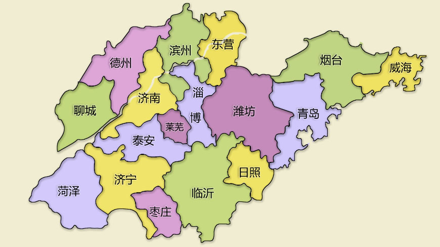

- 北京南 -> 青岛 (📅5.28 🚄G205 🕒10:37~14:26, 3时49分 💲349x2)
5.28：台东步行街
5.29: 奥帆中心 —— 情人坝 —— 五四广场
5.30: 第一海水浴场 —— 栈桥景区
5.31: 旅馆 —— 青岛站
🏠 温情海畔海景度假公寓 💲524.9
- 青岛 -> 淄博 (📅5.31 🚄G1068 🕒10:08~12:11, 2时3分 💲89.5x2)
🍢王一烧烤
- 淄博 -> 济南(📅5.31 🚄Z170 🕒16:44~17:51, 1时7分 💲16.5x2)
5.31: 逛吃逛喝，休息
6.1: 趵突泉 —— 五龙潭 —— 大明湖 —— 芙蓉街
6.2: 千佛山 —— 山东博物馆 —— 山东美术馆
6.3: 上午休息 —— 济南站
🏠 博尚电竞影音酒店 💲521.45
- 济南 -> 泰山(📅6.3 🚄K5503 🕒14:00~14:52, 52分 💲12.5x2)
6.3: 晚上爬泰山
6.4: 清晨看日出 —— 下山休息 —— 泰安站
🏠 秋茗山居民宿 💲163.2
-
泰安 -> 北京(📅6.4 🚄G118 🕒13:50~15:47, 1时57分 💲223x2)
🏫 到校
